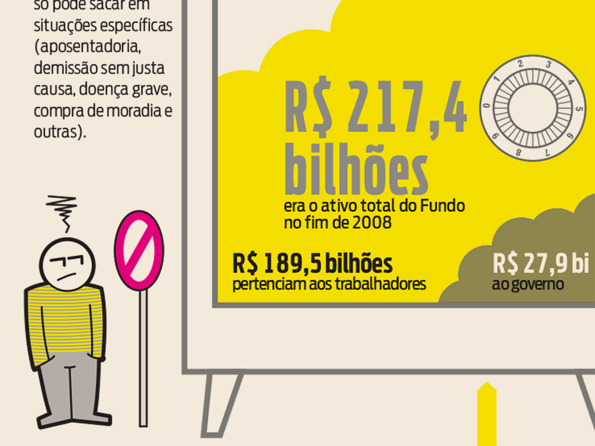
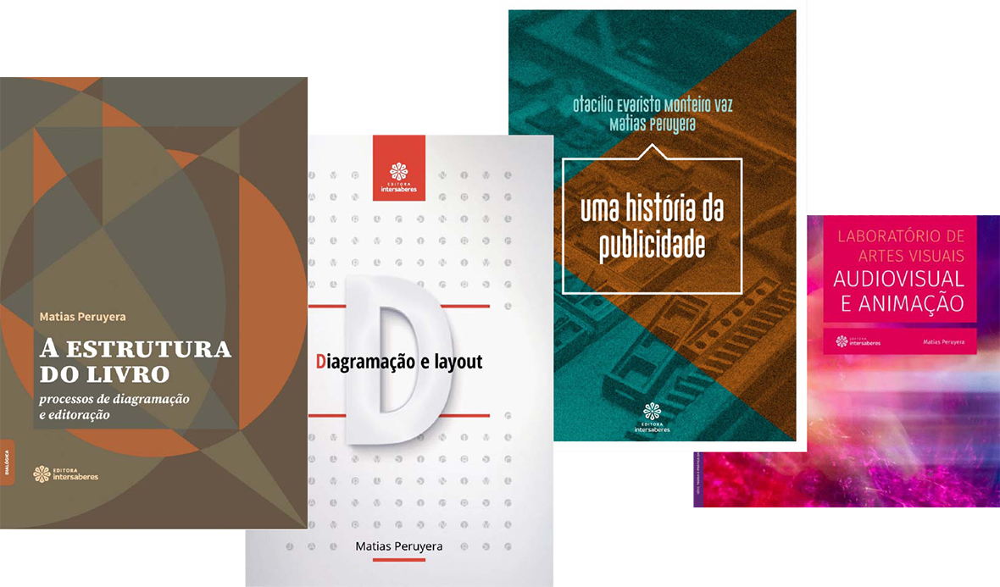

PIB do Paraná
Vários olhares sobre o PIB do Paraná, usando diferentes técnicas para explorar e visualizar os dados.

Eu me definiria como designer gráfico, mas isso deixaria de fora várias outras habilidades de edição, redação, infografia, visualização de dados, tipografia, programação, ilustração, e, talvez a principal: saber identificar qual o melhor recurso para cada situação. Sinto muito amor pelo impresso, mas também sou fascinado com as possibilidades do interativo.
Meu currículo, para ver online ou em PDF. Ou você pode me mandar um email.
Para questões acadêmicas, veja meu Lattes ou meu perfil no Academia.
Design e arquitetura de informação a serviço do jornalismo, para situações nas quais textos e fotografias não contam a história completa.
Vários olhares sobre o PIB do Paraná, usando diferentes técnicas para explorar e visualizar os dados.
Alguns exemplos de mapas que fiz. Uma paixão antiga que se tornou parte importante da minha vida profissional.

Uma seleção de infográficos entre os – literalmente – milhares que fiz.

A explicação de um serviço inovador é parte importante desse serviço, assim como informações e conteúdo para aproveitá-lo melhor. Nestes projetos cuidei tanto da parte visual como da redação.
Um serviço para importadores que precisava ser bem explicado para que sua utilidade fosse percebida.

Um microempreendimento que previu algumas tendências. Aqui a informação busca a empatia.

Diferenças culturais podem causar más impressões e prejudicar negócios. Este material busca prevenir essas situações.

Oportunidades para pensar não apenas como as pessoas leem, mas também como elas apertam botões, rolam páginas, interpretam microtextos. Mais uma dimensão nos projetos de design.
Um blog com um jeitão de revista underground dos anos 70. CSS pensado como nanquim e Letraset.

Um projeto de ferramenta para organizar o desenho de fontes tipográficas, e aprender sobre idiomas ao mesmo tempo.

Uma solução mais de edição do que de interação, mas que resultou eficiente a pesar disso – ou justamente por isso.

Ferramentas para encontrar questões humanas em grandes conjuntos de dados.
Visualização para encontrar relações e confirmar hipóteses em milhares de livros e artigos acadêmicos.

Penso em livros como objetos, como máquinas para serem lidas, tanto para diagramá-los como para escrevê-los.
Três livros que produzi, tanto na versão para impressão como na versão ePub.

Escrevi alguns livros didáticos para cursos de graduação em Comunicação, Letras e Artes Visuais.
